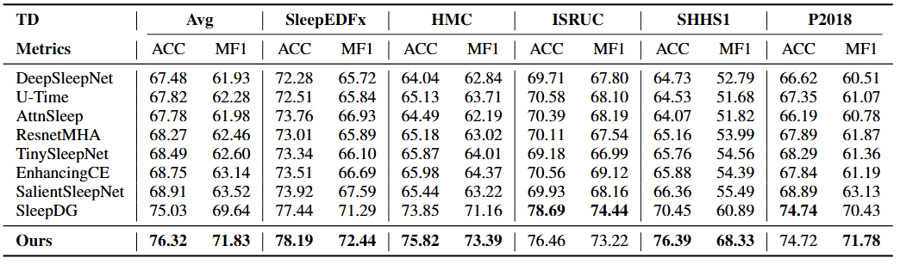

Classification of sleep stages is essential for assessing sleep quality and diagnosing sleep disorders such as insomnia. However, manual inspection of EEG characteristics for each stage is time-consuming and prone to human error. Although machine learning and deep learning methods have been actively developed, they continue to face challenges from the non-stationarity and variability of electroencephalography (EEG) and electrooculography (EOG) signals, often leading to poor generalization on unseen datasets. This research proposed a Sleep Stage Classification method by developing Multivariate Differential Transformer (SleepDIFFormer) for joint EEG and EOG representation learning. Specifically, SleepDIFFormer was developed to process EEG and EOG signals using our Multivariate Differential Transformer Architecture (MDTA) for time series, trained with cross-domain alignment. Our method mitigated spatial and temporal attention noise while learning a domain-invariant joint EEG–EOG representation through feature distribution alignment, thereby enabling generalization to unseen target datasets. Empirically, we evaluated our method on five different sleep staging datasets and compared it with existing approaches, achieving state-of-the-art performance. We also conducted a thorough ablation analyses of SleepDIFFormer and interpreted the differential attention weights, highlighting their relevance to characteristic sleep EEG patterns. These findings have implications for advancing automated sleep stage classification and its application to sleep quality assessment.
In this section, we present the main results of the proposed SleepDIFFormer model on multiple datasets. Our method demonstrates strong generalization and alignment capabilities, achieving state-of-the-art results in most evaluation settings.

Cross-domain sleep-stage classification performance comparison. TD = target domain. Each column shows results when TD is the test domain and remaining are used for training. Best values are bolded.
Attention weight allocation visualization on EEG and EOG across 4 layers with wake and different sleep stages.
@article{xxx2025sleepdifformer,
author = {Name},
title = {SleepDIFFormer: Multimodal Differential Transformer for Sleep Staging},
journal = {arXiv preprint arXiv:xxxx.xxxxx},
year = {2025}
}